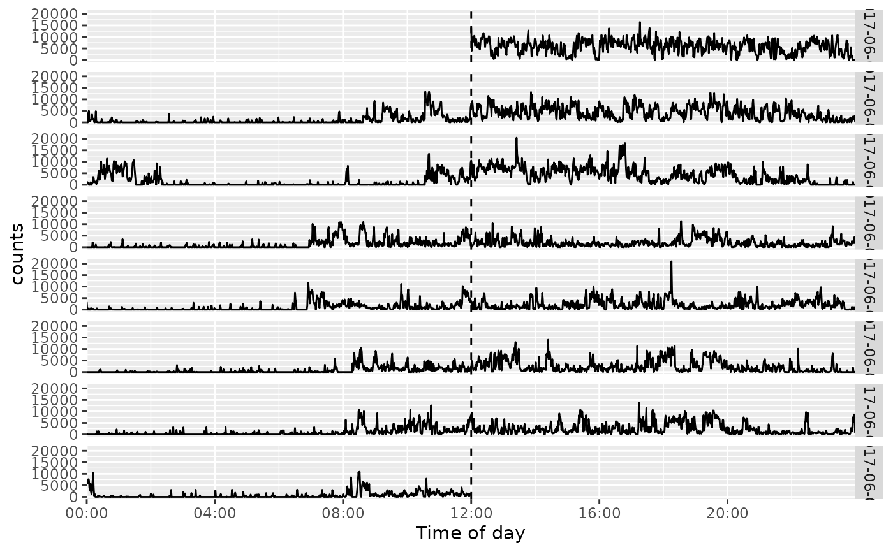
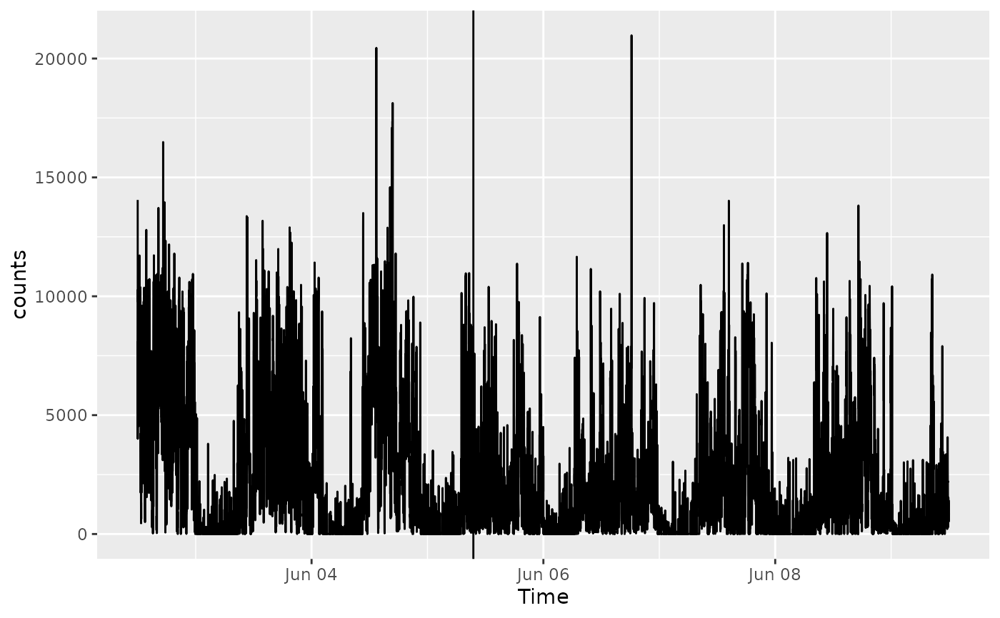

A convenience layer for ggplot2::geom_vline() that converts time inputs to actiplot time scales. A time of day such as "12:00" is drawn in every daily facet. A complete date-time is drawn at that instant on a full-time plot and only on its matching date facet in an aligned day plot.
Arguments
- xintercept
A POSIXct date-time, an ISO-like date-time character string, or a time-of-day character string such as "08:30".
- timezone
Time zone used to parse date-time character values. The timestamp time zone in the plot data is used when NULL.
- check_timezone
If TRUE, date-time character values require an explicit timezone.
- ...
Arguments passed to ggplot2::geom_vline().
Examples
acti_plot_day(acti_minute_data, counts) +
geom_time_vline("12:00", linetype = "dashed")

acti_plot_time(acti_minute_data, counts) +
geom_time_vline("2017-06-05 09:30:00", timezone = "GMT")
